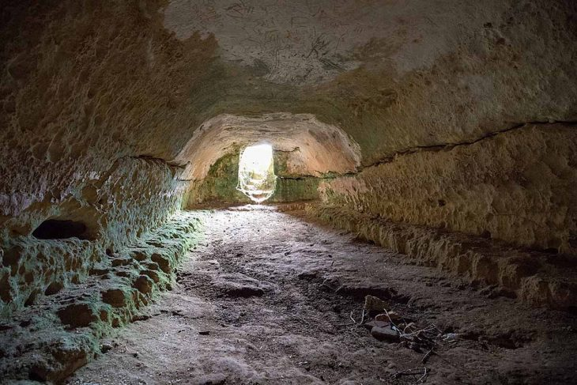

Assentament aproximadament del segle X a.C, que perdurarà fins a l'època romana (123 a. C.), sense descartar que es puguin trobar restes més antigues.

En l'actualitat conserva tres talaiots ben visibles (T1, T2 i T3, a més d'un altre probable) perquè en temps passats, almenys un va ser destruït quan es va construir la carretera Maó-Ciutadella. Segons les dades publicades des d'antic, hi havia moltes restes d'estructures ocupant l'àmplia superfície existent entre els talaiots, que avui han desaparegut de la vista a causa dels treballs agrícoles que s'han dut a terme en els últims 50 anys.
Editat per darrera vegada el